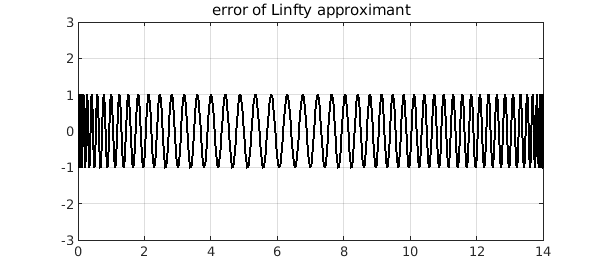
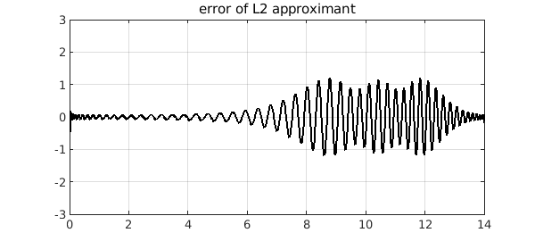
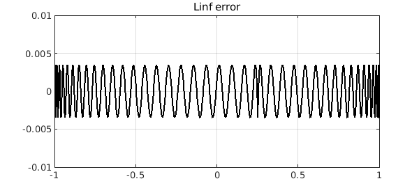

Polynomial approximation in the $L^\infty$ norm
Given a continuous real-valued function $f$ on $[a,b]$, finding the best polynomial approximant $p_\infty$ to $f$ in the $L^\infty$-norm $\mbox{min}_{p\in\mathcal{P}_n}|f-p|_{L^{\infty}}$ is known as the minimax (or sometimes Chebyshev) approximation problem. These approximations can be computed by the Chebfun minimax command. Let's revisit the Chebfun example https://www.chebfun.org/examples/approx/ResolutionWiggly.html and compute a best polynomial approximant of degree 100:
dom = [0 14]; deg = 100;
f = chebfun(@(x) sin(x)^2 + sin(x^2), dom);
pinf = minimax(f, deg, 'tol', 1e-8);
plot([f pinf]), ylim([-3 3]), grid on
title('f and Linfty approximant')
The error $f-p_\infty$ exhibits the beautiful equioscillation phenomenon:
plot(f-pinf,'k'), ylim([-3 3]), grid on
title('error of Linfty approximant')

Polynomial approximation in the $L^2$ norm
The best polynomial approximant to $f$ in the $L^2$-norm is easier to compute as it is the orthogonal projection of $f$ onto the space of polynomials of degree $n$. In Chebfun, one can use the polyfit command:
p2 = polyfit(f, deg);
plot([f p2]), ylim([-3 3]), grid on
title('f and L2 approximant')
The error curve is strikingly different. Of course it is slightly larger at its largest, but not by much.
plot(f-p2,'k'), ylim([-3 3]), grid on
title('error of L2 approximant')

Polynomial approximation in the $L^1$ norm
Recently, we added a Chebfun polyfitL1 command to compute best polynomial approximants in the $L^1$-norm. (See the book by Pinkus for a survey of this subject [2].) Compressed sensing has made the $L^1$ norm an important tool in signal processing as it can promote sparsity in the solution or residual. A Newton-based algorithm proposed by Watson [4] is known to converge, under some assumptions, and this is the basis of polyfitL1.
p1 = polyfitL1(f, deg);
plot([f p1]), ylim([-3 3]), grid on
title('f and L1 approximant')

Here is the error curve for our example. At first glance it looks like the $L^2$ case, but it is more strongly localized.
plot(f-p1,'k'), ylim([-3 3]), grid on
title('error of L1 approximant')
Another example
Let's do another example, following the example of Myth 3 of [3], the approximation of $|x-1/4|$ on $[-1,1]$ by a polynomial of degree $80$. This time we just plot the errors:
x = chebfun('x'); f = abs(x-1/4);
deg = 80;
pinf = minimax(f, deg);
plot(f-pinf,'k'), ylim(1e-2*[-1 1]), grid on
title('Linf error'), snapnow
p2 = polyfit(f, deg);
plot(f-p2,'k'), ylim(1e-2*[-1 1]), grid on
title('L2 error'), snapnow
p1 = polyfitL1(f, deg);
plot(f-p1,'k'), ylim(1e-2*[-1 1]), grid on
title('L1 error')

Again, we see that the best $L^1$ polynomial approximant has a far more localized error. This is a typical phenomenon that is explained in~[1]. To see more, we zoom the y axis by a factor of 100. There is much to be learned here!
ylim(1e-4*[-1 1])
title('closeup')
A word on the algorithm for polyfitL1
In [1], it is recommended that Watson's algorithm should be used in conjunction with linear programming problems and a refinement step. These additional algorithmic details can significantly speed up the computation. However, MATLAB's linear programming commands are in a toolbox, so we have avoided these steps in keeping with the Chebfun policy of just relying on core MATLAB.
References
[1] Y. Nakatsukasa and A. Townsend, Error localization of best L1 polynomial approximants, SIAM J. Numer. Anal., 59 (2021), 314--333.
[2] A. M. Pinkus, On L1-approximation, Cambridge University Press, 1989.
[3] L. N. Trefethen, Six myths of polynomial interpolation and quadrature, appendix of Approximation Theory and Approximation Practice, extended edition, SIAM, 2019.
[4] G. A. Watson. An algorithm for linear L1 approximation of continuous functions, IMA J. Numer. Anal., 1 (1981), 157--167.